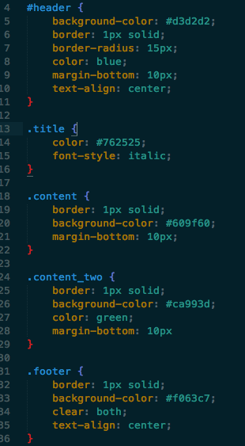
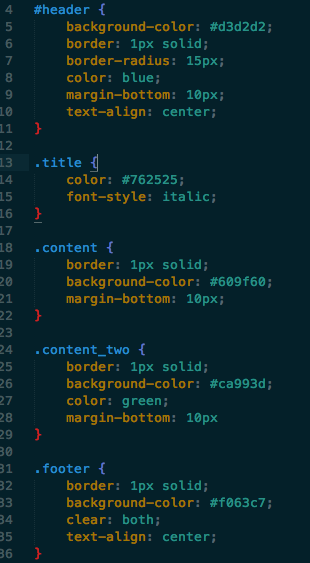
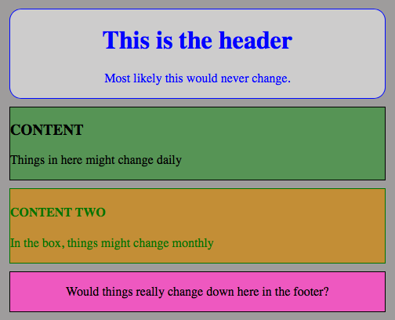
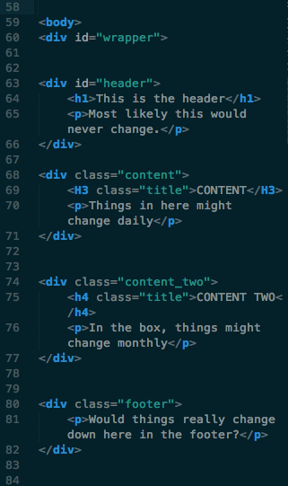
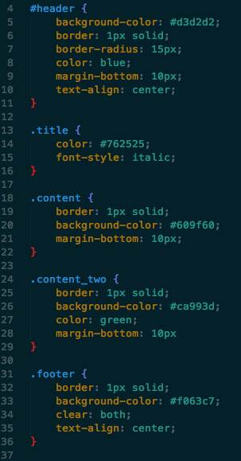
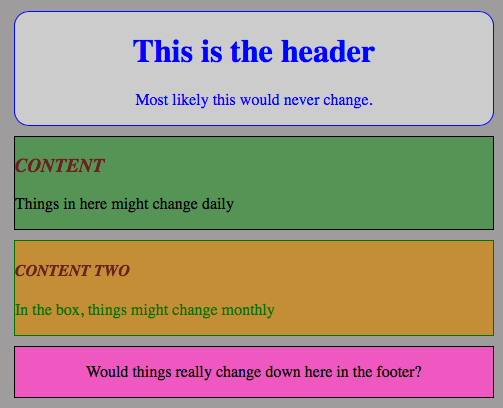

When should a id or class be used?
July 27, 2014
Id vs Class. What does that mean?
In doing the research for this, it seems that folks out there have a lot of different opinions, for an example, take a look at this thread from stackoverflow. Lets start off by giving some definitions of the two, these are taken from W3Schools:id selector
The id selector uses the id attribute of an HTML tag to find the specific element. An id should be unique within a page, so you should use the id selector when you want to find a single, unique element. To find an element with a specific id, write a hash character, followed by the id of the element. The style rule below will be applied to the HTML element with id="para1":
#para1 {
text-align: center;
color: red;
}
class selector
The class selector finds elements with the specific class. The class selector uses the HTML class attribute. To find elements with a specific class, write a period character, followed by the name of the class: In the example below, all HTML elements with class="center" will be center-aligned:
.center {
text-align: center;
color: red;
}
Ok, again, what does that mean. I am going express what I think it means. I personal would only use a id selector if the element I was trying to style was always going to be the same, never have the chance to change. Like a header for example, and possible the footer. I would use a class selector if I thought I would use it through out my HTML. For example, this is a very basic website.
 

Above is the code for our basic web site.

This is what the site looks like with the above code.
As you can see we have a id=header. The header will never change. I have a few classes, .title .content, .content_two, .footer. All these style the particular elements differently from each other. Lets say I want to use the title class for all my headers, all I have to do is add it to the element instead of re-writing all the div classes.
 
Above, .title has been added to the h elements.

As you can see, now our headers of the two content areas are the same. I understand this is a very very simple description of the two. I purposefully named this class title to express a point. As a rule, never have the names of classes or ids for that matter, they should NOT be descriptive but rather describe the function. In this case a better name might be .color. That way, if we used this color and font-style as a standard for our site to mark things for example, we could create one class and continue to use it through out the HTML.
In summary, the rule of thumb is you should ask yourself, is there more than one element which requires the same style now or at anytime in the future? and if the answer is even maybe, then make it a class. Ids are for uniquely identifying elements. In practical terms, id attributes should only be used one per document.